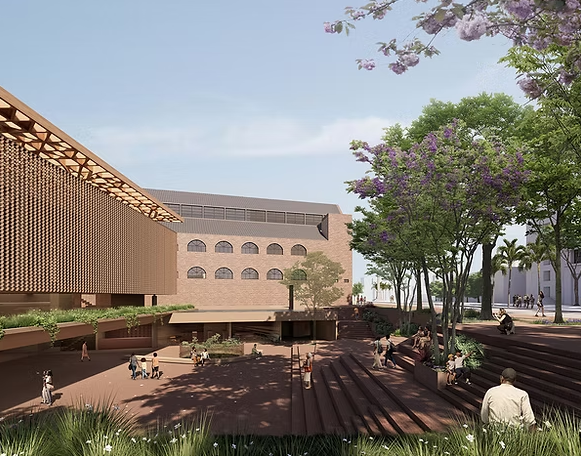
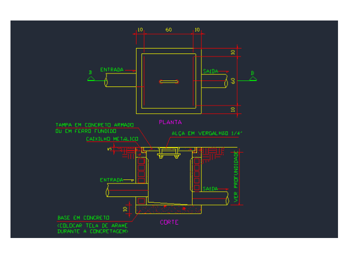

Projetos Técnicos
Projeto 1 – Esgotamento Predial (Edifício Residencial)
Planta de esgotamento predial e desenvolvimento da rede de águas residuais, elaborados em AutoCAD e QiBuilder, com foco em clareza gráfica e cumprimento das normas técnicas.

Projeto 2 – Isométrico de Esgotamento

Representação isométrica das tubagens, com identificação de diâmetros, conexões e sentido de escoamento.
Projeto 3 – Detalhes Construtivos
Detalhamento técnico de caixas de inspeção e caixas de visita, garantindo correta execução em obra.

Projeto 4 – Cortes e Perfis

Corte vertical da rede de esgotamento predial com análise de declividades.